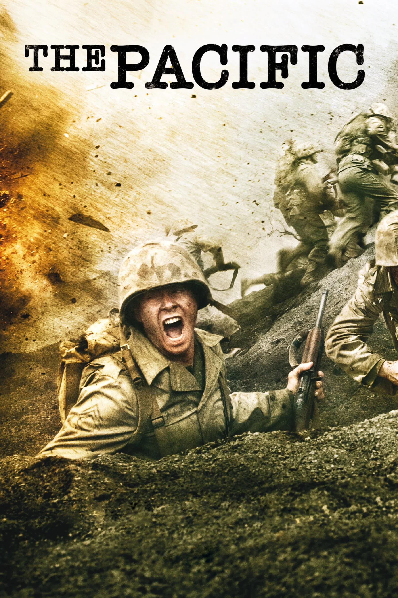
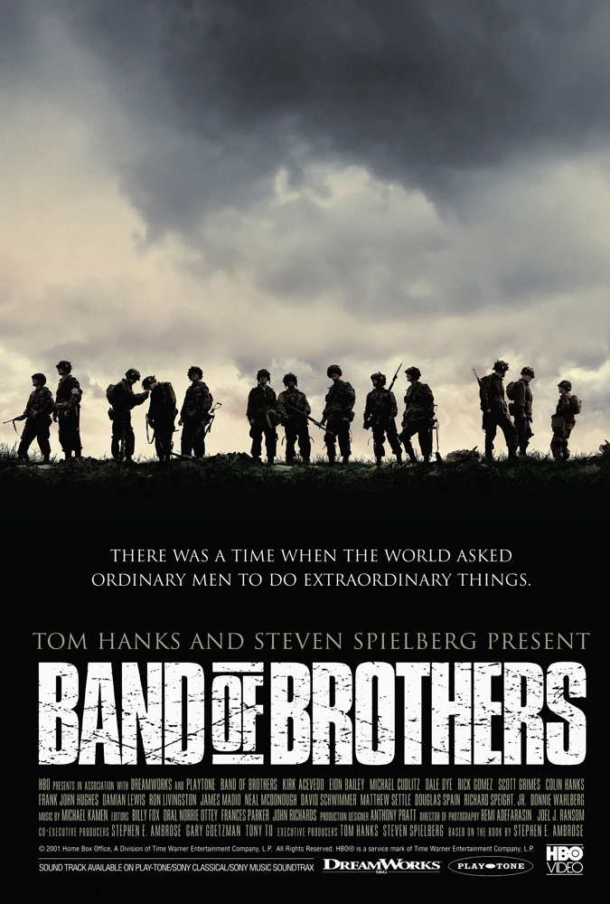
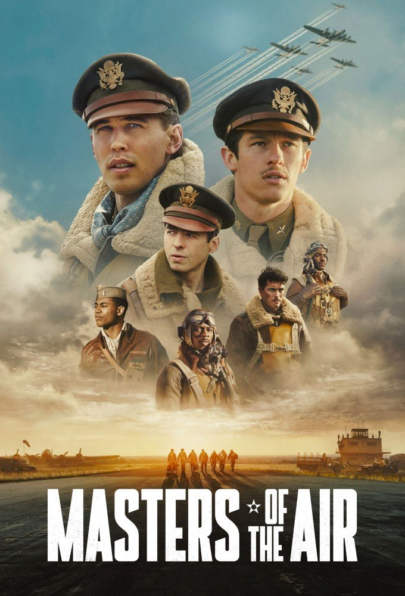

Sucesora

Ahora disponible por streaming en HBO Max
Un adelanto del salto sobre Normandía y la campaña de la Compañía Easy.
Cuartel General · 101.ª División Aerotransportada Expediente N.º 506-E · Prioridad: Inmediata
Informe de operaciones
Basada en el libro de Stephen E. Ambrose y producida por Steven Spielberg y Tom Hanks, la miniserie sigue a los hombres de la Compañía Easy desde el durísimo entrenamiento en Camp Toccoa, pasando por el salto sobre Normandía la madrugada del Día D, la resistencia en Bastogne y el avance por Alemania, hasta la captura del Nido del Águila.

Band of Brothers abrió camino a otras dos miniseries bélicas de Spielberg y Hanks: mismo equipo, distinto frente de la Segunda Guerra Mundial.

